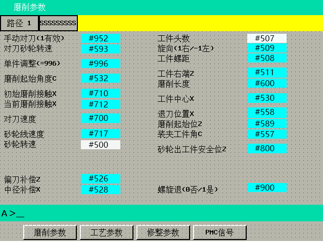

机床功能介绍
对刀
具体参数设置请参考磨削界面
- 打开磨削界面

- 设置手动对刀参数为：1，设置合适对刀砂轮转速及对刀速度
- 设置工件基本参数(螺距/旋向/工件右端/磨削长度等)
- 设置工件中心X，使砂轮能够进入工件
- 设置磨削起始位Z，保证砂轮在工件外
- 设置砂轮出工件安全位置Z，此位置为砂轮刚出工件时Z坐标，此参数为保护参数
- 检查其他界面参数
- 点亮手动对刀键，启动程序，等待砂轮进入工件
- 点亮DRF键，选择合适手轮步率(1/10/100)
- 砂轮进入工件开始插补动作后，通过手轮控制将砂轮放置到工件槽内
- 砂轮自动开出来后程序结束，关闭手动对刀键
提示
- 摇动手轮时将机床倍率调到最小
- 砂轮放到槽内后最好将X轴后退0.1mm左右以保证安全，然后将机床倍率稍微提高，观察是否后段有挤压